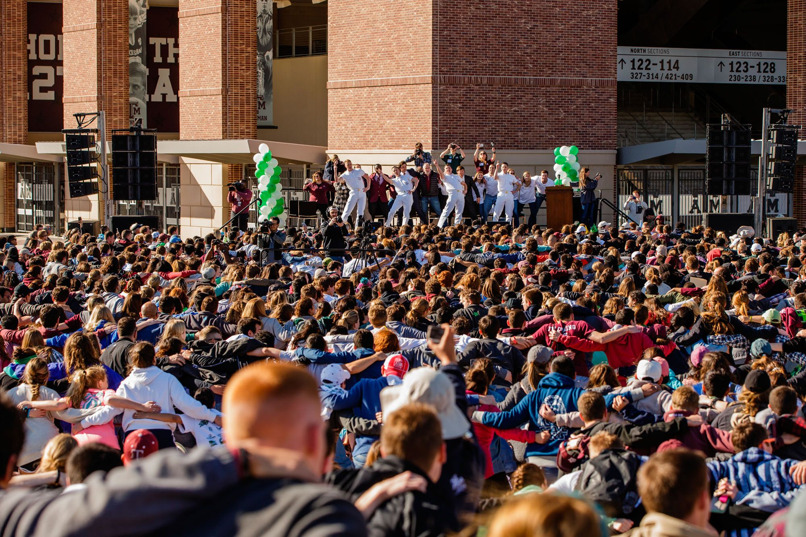

Planned, organized, and led a team of volunteers to establish a pocket prairie in a local
neighborhood in
my home town, Sugar Land
A pocket prairie is a small garden of native plants to our state: they benefit the environment
as
they
are best optimized to keep the soil healthy, provide good habitats for pollenators and other
beneficial critters.
Texas native plants grow especially deep roots, helping in irrigation as well.
Big Event

Big Event 2023: volunteered with friends to help a local Bryan resident clear out their yard of
leaves, unwanted
plant beds, and general landscaping
Big Event 2024: Volunteered with friends to help a local Bryan resident clear out trash from
their yard